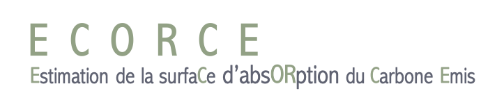
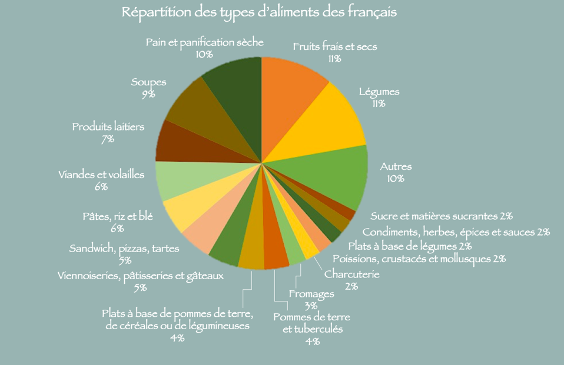
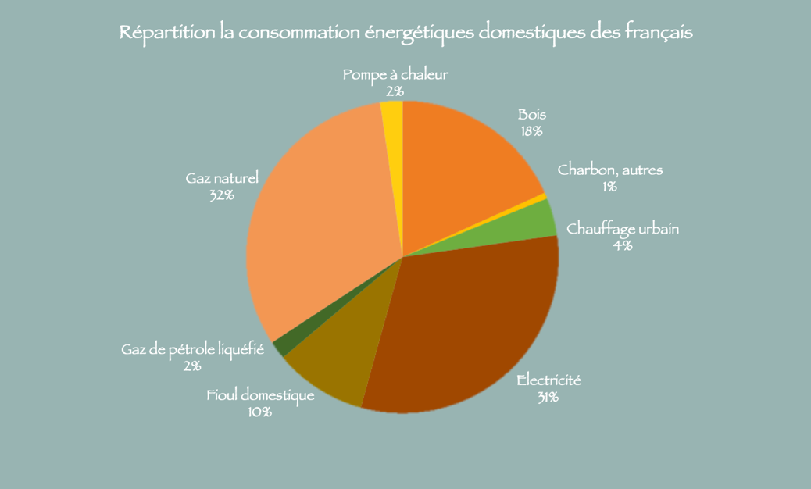
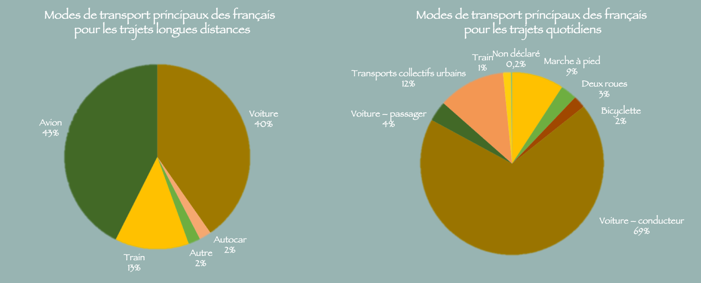

1 / 3
- Alimentation -

Première nécessité pour l’homme, les denrées alimentaires impactent les émissions de gaz à effet de serre à chaque étape
de la chaîne de production, du champ à la fourchette.
Les activités agricoles et alimentaires françaises seraient responsables de 24 % des émissions. Les deux tiers sont dues
à la production agricole, 19 % au transport et la part restante provient de la grande distribution et la gestion des déchets.
Quelle quantité de légumes consommez vous par jour ?
La moyenne de consommation de légumes des français est d’environ
450 grammes par jour
.
Entre 30 et 60 gr
Entre 60 et 90 gr
Entre 90 et 120 gr
Quelle quantité de légumineuses consommez vous par jour ?
Entre 30 et 60 gr
Entre 60 et 90 gr
Entre 90 et 120 gr
Quelle quantité de céréales et produits dérivés consommez vous par jour ?
La moyenne de consommation de céréales des français est d’environ
640 grammes par jour
.
Entre 30 et 60 gr
Entre 60 et 90 gr
Entre 90 et 120 gr
Comment choisissez vous les fruits et légumes que vous consommez?
Je mange majoritairement des fruits et légumes de saison
Je n’apporte pas d’intérêt particulier au choix des fruits et légumes que j’achète
2 / 3
- Energie -

L'impact de la production de l'énergie sur les émissions de CO² a largement dimininué depuis 40 ans
en France, avec le développement des énergies renouvelables et la recherche de l'efficacité énergétique.
Cependant, elle reste non-négligeable : en union européenne le secteur de l'énergie émet
1,3 Gigatonne CO² par an.
Connaissez-vous votre consommation d'énergie domestique ?
L'énergie domestique correspond à toute l'énergie consommée dans votre foyer.
Elle englobe le chauffage, le chauffage de l'eau, la cuisson et l'électroménager par exemple.
Oui : Veuillez répondre à la question suivante
Non : l’estimation ne prendra pas en compte votre consommation énergétique (Merci de ne pas répondre à question 9)
Quelle quantité d'énergie domestique utilisez-vous ?
consommation électrique par mois (en kWm/mois)
consommation de gaz / propane par mois (en kWm/mois)
Une bouteille de gaz pesant 10kg produit environ 140 KWh d'énergie.
consommation de fioul par an (L/an)
consommation de bois par an (kg/an)
3 / 3
- Transport -

Pour répondre à cette partie du questionnaire, vous pouvez vous aider de ce
calculateur kilométrique
.
Distance parcourue en transports sur des trajets urbains/périurbains journaliers
Combien de kilomètres réalisez-vous par semaine en transports en communs ?
kilomètres par semaine
Combien de kilomètres réalisez-vous en voiture par semaine (trajets quotidien) ?
kilomètres par semaine
Distance parcourue en transports sur des trajets nationaux ou internationaux annuels
Combien de kilomètre réalisez-vous par an, en transport en commun ferroviaire ?
kilomètres par an
Combien de kilomètres réalisez-vous en voiture (hors trajets quotidien) ?
kilomètres par an
Combien de kilomètres faites-vous en autocar ?
kilomètres par an
Combien de kilomètres faites-vous en avion ?
kilomètres par an
❮
❯